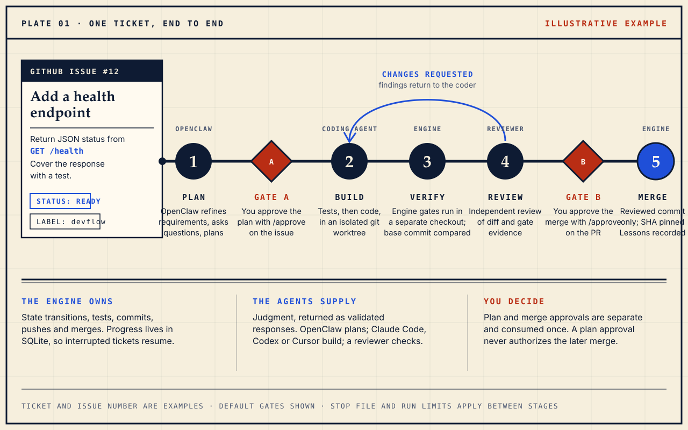
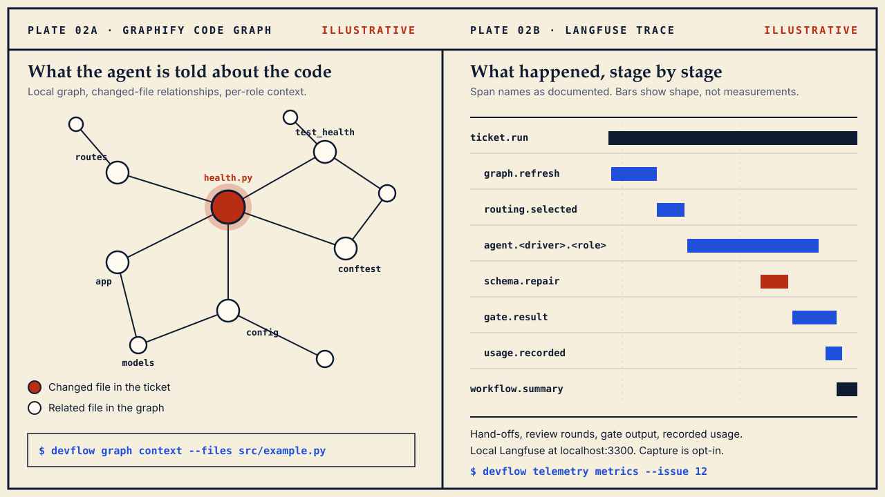

Engineering workbench · OpenClaw + your coding agents
From GitHub issue to reviewed pull request.
Devflow turns a GitHub Project into an engineering queue. Agents bring judgment; the engine owns state, tests, commits and merges; you approve the plan and the merge.
Run your first ticket Read the source
Early-stage v0.1.0 · MIT · macOS and Linux targets

Five stages
Open a stage to see who acts, and what has to be true to move on.
1PlanOpenClaw refines the issue. You approve the plan.
OpenClaw refines requirements, asks clarifying questions and proposes a plan. Plan approval is required by default. Only configured approvers count; by default that is the authenticated gh user.
/approve- Accept the proposed plan, or clarification defaults
/answer …- Answer a clarification
/reject …- Request a revised plan
Comment on the issue. An approval is consumed once.
2BuildTests, then code, in an isolated git worktree.
Claude Code, Codex or Cursor design tests and implement the change through their terminal CLIs, with session resume and configurable usage-based routing. The engine, not the agent, owns state transitions, commits and pushes.
Agents return validated responses. Saying “done” does not advance a ticket.
3VerifyThe engine runs gates in a separate checkout.
Gates run in a clean checkout, and failures are compared against the base commit. Detection of test commands during devflow init is a starting point: review .devflow/config.toml before the first run.
[review]
require_integration = trueWith require_integration = true, review is blocked until at least one integration gate is configured. The default is false.
4ReviewAn independent reviewer checks the diff and the evidence.
The reviewer checks the implementation diff and gate evidence. Findings return to the coder for another pass. The reviewer prefers a different tool from the coder when one is available; that is tool-level separation, not a guarantee of a different underlying model.
Review caps bound the loop.
5MergeYour PR approval merges the reviewed commit.
After review and CI checks, /approve on the pull request authorizes the merge. The merge is pinned to the commit that was reviewed; an unexpected branch update blocks it. Afterwards devflow captures evidence-backed lessons.
/approve- On the PR: authorize merge after review and CI checks
/resume- On the issue: resume an escalated ticket
An issue-level plan approval does not authorize the later merge.
Evidence you can open
A code graph going in. A trace coming out.

Graphify: context for each agent
Graphify builds a local code graph on first use in each checkout and the engine rebuilds it when the source fingerprint changes. AST updates run locally without an LLM; agent providers still receive the context used for their model calls.
devflow graph status
devflow graph refresh
devflow graph context --files src/example.pyLangfuse: a trace of the loop
An optional Docker stack ships in the repository. It records prompts, handoffs, exposed tool calls, review loops, stage timings and available usage. Capture of content is opt-in and redacted; no Langfuse Cloud account is needed.
# from the devflow source checkout
./scripts/observability up \
--capture-content /absolute/path/to/your/repo
# then, in that repository
devflow telemetry demo
devflow telemetry metricsOpen localhost:3300. Usage and cost may be partial or estimated, and private OpenClaw internals are not visible. Observability guide
Setup
Start with one small ticket. Read the plan. Review the diff.
Needs Python 3.11+ with uv, Git, the GitHub CLI, OpenClaw, Graphify and at least one authenticated coding-agent CLI (claude, codex or agent). Two are recommended so the reviewer can differ from the coder. Devflow includes no model subscriptions or API credits.
-
Install
uv tool install "git+https://github.com/Rishik-J/devflow.git" uv tool install graphifyyInstalled from the repository; no PyPI release is documented.
-
Connect GitHub and OpenClaw
gh auth login gh auth refresh -h github.com -s project # separate terminal, if not already running openclaw gateway openclaw models list devflow setup-openclaw --model YOUR_PROVIDER/YOUR_MODEL devflow doctor -
Initialize your repository
cd /path/to/your/repo devflow initNeeds a git repository with a GitHub remote and an initial commit. Review
.devflow/config.toml, especially environment setup and test commands. -
Create the queue
devflow board-create --title "Engineering queue" gh label create devflow --color 0e8a16 \ --description "Worked by devflow" --forceCreate a small issue, label it
devflow, add it to the Project and set Status to Ready. -
Preview, then run
devflow board devflow run --dry-run # replace 12 with your issue number devflow ticket 12 --watch 20run --dry-runpreviews queue selection without model calls.ticket N --dry-runis different: it can call agents.
Read before you trust it
Early software. Known edges.
- Status
- Version 0.1.0. The single-ticket workflow has been exercised on a real repository; queue execution, stop conditions and failure paths have automated integration coverage.
- Execution
- The runner executes sequentially;
max_activeabove 1 does not start parallel workers. No daemon or web dashboard is installed automatically. - Limits
- STOP and run limits are checked between stages, so a running stage can finish and time or cost can overshoot. Cost tracking excludes unmetered OpenClaw calls and is not a billing guarantee.
- Security
- Worktrees and prompt controls are not a security boundary against arbitrary generated code. Model providers receive the context used for their calls.
- Autonomy
- Both approval gates are on by default. An opt-in autonomous mode with OpenClaw supervision exists for trusted repositories; CI, the reviewed commit and engine gates are still enforced before merge.